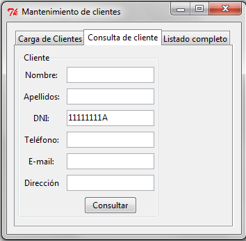
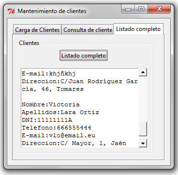
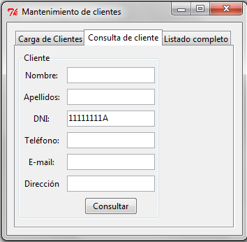
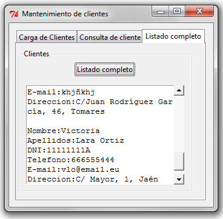

En esta actividad vas a completar el método recuperar_todos() de la clase Clientes, que se encuentra en el archivo clientes.py.
Este método será el encargado de consultar todos los datos de la tabla clientes en la base de datos. Se utilizará en la pestaña Listado completo de la aplicación, cuando el usuario pulse el botón con ese mismo nombre.
Para ello necesitas utilizar lo aprendido sobre consultas SQL con el comando SELECT, y aplicarlo en el contexto de Python y sqlite3.
üéØ ¿Qu√© debes hacer?
- Conectar con la base de datos usando el método
abrir() ya creado previamente.
- Realizar la consulta SQL que recupere todos los datos de la tabla
clientes.
- Recoger el resultado con
fetchall().
- Devolver ese resultado al final del método.
üöß C√≥digo de partida:
import sqlite3 # Importamos la librería necesaria
class Clientes:
def abrir(self):
conexion = sqlite3.connect("bdclientes.db")
try:
conexion.execute("""
CREATE TABLE IF NOT EXISTS clientes (
nombre TEXT,
apellidos TEXT,
dni TEXT PRIMARY KEY,
telefono TEXT,
correo TEXT,
direccion TEXT
)
""")
conexion.commit()
except Exception as e:
print("❌ Ha ocurrido un error:", e)
return conexion
def alta(self, datos):
conexion = self.abrir()
try:
conexion.execute("""
INSERT INTO clientes(nombre, apellidos, dni, telefono, correo, direccion)
VALUES (?, ?, ?, ?, ?, ?)
""", datos)
conexion.commit()
except Exception as e:
print("❌ Error al insertar cliente:", e)
finally:
conexion.close()
def consulta(self, datos):
conexion = self.abrir()
try:
cursor = conexion.execute("""
SELECT nombre, apellidos, dni, telefono, correo, direccion
FROM clientes
WHERE dni = ?
""", datos)
resultado = cursor.fetchall()
except Exception as e:
print("❌ Error en la consulta:", e)
resultado = []
finally:
conexion.close()
return resultado
def recuperar_todos(self):
conexion = self.abrir()
try:
cursor = conexion.execute("""
-- AQUÍ VA TU COMANDO SQL SELECT --
""")
resultado = cursor.fetchall()
except Exception as e:
print("❌ Error en la consulta:", e)
resultado = []
finally:
conexion.close()
return resultado
ü߆ ¿Qu√© debes escribir como instrucci√≥n SQL?
Como quieres obtener todos los registros de la tabla clientes sin ningún filtro, puedes usar esta instrucción SQL:
SELECT * FROM clientes
Con eso obtendrás todas las filas y todas las columnas almacenadas.
üß© ¿C√≥mo quedar√≠a el m√©todo completo?
Esta sería la estructura esperada (¡no copies directamente, entiéndelo primero!):
def recuperar_todos(self):
conexion = self.abrir()
try:
cursor = conexion.execute("SELECT * FROM clientes")
resultado = cursor.fetchall()
except Exception as e:
print("❌ Error en la consulta:", e)
resultado = []
finally:
conexion.close()
return resultado
üí¨ Consejo: Este m√©todo devolverá una lista de tuplas. Cada tupla representa una fila de la base de datos con los datos de un cliente. Luego, en el archivo formularioclientes.py, estos datos se insertan uno a uno en la interfaz mediante un bucle for.
üõ†Ô∏è ¡Con este paso completas la funcionalidad de la tercera pesta√±a de tu aplicaci√≥n! Estás cada vez más cerca de tener un software completo y funcional.

  
 
 Vamos a conocer dos tipos de pruebas:
Vamos a conocer dos tipos de pruebas: Cuando se ha terminado y entregado un proyecto de software al cliente, generalmente necesita alguna modificación posterior. Esta fase es el mantenimiento.
Cuando se ha terminado y entregado un proyecto de software al cliente, generalmente necesita alguna modificación posterior. Esta fase es el mantenimiento.